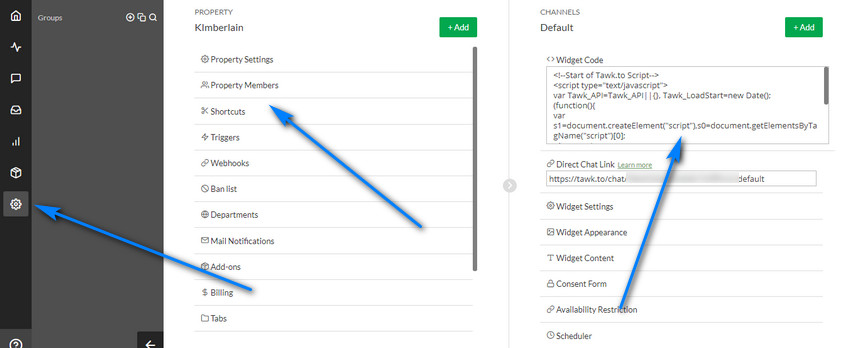
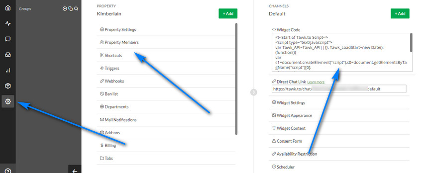

Settings
Overview
Enables updating of system settings. Please read carefully. Click example images to display full size version in new tab/window.
{kind=link}
Helpdesk Settings
Help Desk Name - Enter name for help desk.
HTTP Installation Path - http installation path to your support folder as seen in your browser address bar. NO trailing slash.
Examples might be:
http://www.example.com (if installed in domain root)
http://www.example.com/helpdesk (if installed in folder, for example "helpdesk")
Default Language - Default system language. More info on the language options here.
Admin Folder Name - You should change your admin folder name from "admin" to something unique, which can help with security. Change folder and enter new name here.
HTTP Installation Path - http installation path to your support folder as seen in your browser address bar. NO trailing slash.
Examples might be:
http://www.example.com (if installed in domain root)
http://www.example.com/helpdesk (if installed in folder, for example "helpdesk")
Default Language - Default system language. More info on the language options here.
Admin Folder Name - You should change your admin folder name from "admin" to something unique, which can help with security. Change folder and enter new name here.
Language & Template Sets
This is applicable to visitor accounts only, not admin support team accounts, which always load from the default language. Here you`ll see an option for
each language currently set and you can specify which template sets load for each language. If none are set, they always load from the default set.
Note that if imap or the API is being utilised, the system will always load from the default set unless you pass the language override with the data.
More info on the imap and API pages.
{kind=link}
Note that if imap or the API is being utilised, the system will always load from the default set unless you pass the language override with the data.
More info on the imap and API pages.
Account Settings
Enable Create Account Option - If enabled, visitor can create support account.
Enable BB Code - By default BB Code is always enabled for the admin support team. If enabled here, it is also enabled for visitors.
Send Email Notification After Profile Update - Do you wish to send email confirmation after a profile is updated by a visitor?
Send Notification to Admin When New Account is Created Manually - Do you wish to receive email notification if a visitor creates a new support account? Sent to all support team admins if notifications are enabled.
Enable Entry Log For New Accounts - By default, do you wish to enable the entry log for new accounts? Can be enabled/disabled later.
Visitor Can Close Account - If enabled, visitor can close their support account. This is to comply with the GDPR law. If visitor closes account, ALL data related to that visitor is deleted. Tickets, replies, attachments, history etc. EVERYTHING!! This is none reversible.
Max Login Attempts / Ban Time (in Minutes) - Do you wish to restrict the amount of login attempts? Can help prevent bots from auto posting and help with brute force attacks. 0 for no restriction. If set, you can also set a ban time, which must elapse before login is allowed again for the entered email address. This option does NOT use cookies, nor does it restrict by IP address. This feature may be enhanced in future versions.
If you have set a previous value for "Max Login Attempts" and then set it to 0, it will clear the ban table. Settings it to 0 at any time will reset all bans.
Minimum Length For Passwords - Max length for passwords. Should be a high number. The shorter the password, the more vulnerable it is.
Auto Delete Unverified Accounts After XX Days - If enabled, unverified accounts are removed from the system after the specified amount of days. Unverified accounts can be seen on the accounts page via the 'Unverified Accounts' filter.
Enable BB Code - By default BB Code is always enabled for the admin support team. If enabled here, it is also enabled for visitors.
Send Email Notification After Profile Update - Do you wish to send email confirmation after a profile is updated by a visitor?
Send Notification to Admin When New Account is Created Manually - Do you wish to receive email notification if a visitor creates a new support account? Sent to all support team admins if notifications are enabled.
Enable Entry Log For New Accounts - By default, do you wish to enable the entry log for new accounts? Can be enabled/disabled later.
Visitor Can Close Account - If enabled, visitor can close their support account. This is to comply with the GDPR law. If visitor closes account, ALL data related to that visitor is deleted. Tickets, replies, attachments, history etc. EVERYTHING!! This is none reversible.
Max Login Attempts / Ban Time (in Minutes) - Do you wish to restrict the amount of login attempts? Can help prevent bots from auto posting and help with brute force attacks. 0 for no restriction. If set, you can also set a ban time, which must elapse before login is allowed again for the entered email address. This option does NOT use cookies, nor does it restrict by IP address. This feature may be enhanced in future versions.
If you have set a previous value for "Max Login Attempts" and then set it to 0, it will clear the ban table. Settings it to 0 at any time will reset all bans.
Minimum Length For Passwords - Max length for passwords. Should be a high number. The shorter the password, the more vulnerable it is.
Auto Delete Unverified Accounts After XX Days - If enabled, unverified accounts are removed from the system after the specified amount of days. Unverified accounts can be seen on the accounts page via the 'Unverified Accounts' filter.
Auto Close
Email Notification for Auto Closed Tickets - Do you wish to send email notification to visitors if the auto close routine closes a ticket? Note that only a single
email is sent if the routine closes multiple tickets.
Auto Close Duration - Duration that must elapse for tickets to be auto closed. Note that only tickets awaiting a visitor response are closed. Any awaiting an admin response are always assumed open until a reply is made by the support staff. This must be a value greater than zero. If zero, option is disabled.
Run Now - Click to run manually. You can also set this option to run as a cron job or scheduled task.
File to run: control/cron/close-tickets.php
More info on Auto Close option here
Auto Close Duration - Duration that must elapse for tickets to be auto closed. Note that only tickets awaiting a visitor response are closed. Any awaiting an admin response are always assumed open until a reply is made by the support staff. This must be a value greater than zero. If zero, option is disabled.
Run Now - Click to run manually. You can also set this option to run as a cron job or scheduled task.
File to run: control/cron/close-tickets.php
More info on Auto Close option here
Ticket System
Visitors Must Be Logged In To Open Tickets - If enabled, visitors must be logged in to create tickets. If not enabled, an account is created during the ticket creation process, but only if the "Enable Create Account Option" is enabled. Useful
if you want to create accounts manually and only allow enabled accounts to start tickets.
Prevent Tickets From Being Opened If At Least One Ticket Is Already Open - If enabled, visitors cannot open a new ticket if they already have at least 1 active open ticket. This also applies to tickets open by email. It does NOT apply to the API. If you need this feature you should modify your own API calls and check for open tickets before submitting your data to the API.
Note that if visitors can open tickets without an account, they can simply choose another email address (as the check is only against the email address). So, this feature works best if the "Visitors Must Be Logged In To Open Tickets" option is enabled as the check is done against the account ID. Enable Ticket History - Enables ticket history. If enabled, history is displayed in admin below ticket detailing all ticket actions. Screenshot and info here.
Do NOT Send Notification(s) if Visitor Closes Ticket with Reply - If visitor closes ticket with reply, do you still want the support team to receive email notification?
Always Close Ticket On Admin Reply - If set to yes, ticket statuses will always be set as closed on the ticket reply screen.
Lock Open Tickets When Viewed by Support Team - Helps Prevent Simultaneous Replies - If set to yes, ticket is locked when viewed by any support team member. This only applies to open tickets. Other team members will see a message to say that the ticket is locked and being reviewed by XXX. Can help prevent two support staff from replying at the same time. The lock remains in place until a staff member navigates away from the ticket view screen. Administrators can clear ticket locks via the 'Clear Ticket Locks' link on the admin dashboard.
Random Ticket Numbers - If enabled, system generates random ticket numbers. If not enabled, ticket numbers are in sequence starting at 1.
Enable Work Time Tracking For Tickets - If enabled shows time tracking option on ticket reply page and amount of time worked on ticket.
Default Department (Optional) - If set, loads default department when ticket creation page is accessed.
Default Priority Level (Optional) - If set, loads default priority level when ticket creation page is accessed. Note that if you have a default priority level set for a department, the department level will override the default.
Min Digits for Non Random Ticket Numbers - Min digits for ticket numbers. If set to 0, no preceding zeros will be added.
Wordwrap Settings - Helps prevent the display from stretching if someone enters a ticket message without any space breaks. Set limits for desktops, phones and tablets. Set any value as 0 to disable wordwrap.
Prevent Tickets From Being Opened If At Least One Ticket Is Already Open - If enabled, visitors cannot open a new ticket if they already have at least 1 active open ticket. This also applies to tickets open by email. It does NOT apply to the API. If you need this feature you should modify your own API calls and check for open tickets before submitting your data to the API.
Note that if visitors can open tickets without an account, they can simply choose another email address (as the check is only against the email address). So, this feature works best if the "Visitors Must Be Logged In To Open Tickets" option is enabled as the check is done against the account ID. Enable Ticket History - Enables ticket history. If enabled, history is displayed in admin below ticket detailing all ticket actions. Screenshot and info here.
Do NOT Send Notification(s) if Visitor Closes Ticket with Reply - If visitor closes ticket with reply, do you still want the support team to receive email notification?
Always Close Ticket On Admin Reply - If set to yes, ticket statuses will always be set as closed on the ticket reply screen.
Lock Open Tickets When Viewed by Support Team - Helps Prevent Simultaneous Replies - If set to yes, ticket is locked when viewed by any support team member. This only applies to open tickets. Other team members will see a message to say that the ticket is locked and being reviewed by XXX. Can help prevent two support staff from replying at the same time. The lock remains in place until a staff member navigates away from the ticket view screen. Administrators can clear ticket locks via the 'Clear Ticket Locks' link on the admin dashboard.
IMPORTANT: If a team member has a ticket list screen open and they open tickets in new tabs, then close the tabs, the locks WILL NOT be released. The locks
only release if they refresh or navigate away from the ticket list screen. If this is the case, the locks must be manually cleared. If this feature proves
unpredictable, please disable it. OR make your staff members aware of how they should view tickets.
Random Ticket Numbers - If enabled, system generates random ticket numbers. If not enabled, ticket numbers are in sequence starting at 1.
Enable Work Time Tracking For Tickets - If enabled shows time tracking option on ticket reply page and amount of time worked on ticket.
Default Department (Optional) - If set, loads default department when ticket creation page is accessed.
Default Priority Level (Optional) - If set, loads default priority level when ticket creation page is accessed. Note that if you have a default priority level set for a department, the department level will override the default.
Min Digits for Non Random Ticket Numbers - Min digits for ticket numbers. If set to 0, no preceding zeros will be added.
Wordwrap Settings - Helps prevent the display from stretching if someone enters a ticket message without any space breaks. Set limits for desktops, phones and tablets. Set any value as 0 to disable wordwrap.
Dispute System
Enable Dispute System - If set, the dispute system is enabled and additional dispute options will be seen in the admin
area. Once a standard ticket is created, you have the option when viewing a ticket to change it to a dispute. Once this is done, you can give multiple visitors access to
the same ticket. This is useful for example, for gaming websites that regularly have disputes between members. More on disputes here.
After Each Visitor Response, Allow No Further Replies Until Admin Has Responded - This disables any further visitor replies until admin has responded. This can be useful if you find that some disputes turn into slanging matches between visitors. This overrides the post privileges.
After Each Visitor Response, Allow No Further Replies Until Admin Has Responded - This disables any further visitor replies until admin has responded. This can be useful if you find that some disputes turn into slanging matches between visitors. This overrides the post privileges.
Tickets by Email
Enable Imap Debug Log - Do you wish to enable the imap debug log? Can be useful for identifying mail issues. If enabled, all imap
operations are logged to the "logs" folder, which must be writeable.
Include Attachments in Notification Emails (For tickets opened via Imap) - When emails are replied to by a support team member, do you want to include ticket attachments in the notification email?
Send Account Creation Notification When First Ticket is Opened via Imap - When an initial ticket is sent via imap, do you want to send the account creation notification email?
Attempt to Clean Quoted Data From Email Message Body - If enabled, system attempts to clean incoming mail and remove quoted data. eg: data from previous emails. This is experimental.
Tickets Cannot Be ReOpened by Email - If enabled, tickets cannot be reopened from an imap mailbox if the ticket was previously closed. If this is enabled and a visitor replies to a closed ticket, the reply is not allowed and the visitor will receive email notification that they need to log in to their account if they wish to reopen ticket.
Imap Query String Parameter - Imap url parameter. A custom param will prevent anyone from accessing your imap urls. When setting up any cron jobs, make sure that you specify the correct new parameter.
Ini Set Memory Override - Will not be available on all servers. If set, will attempt to adjust memory limit (in megabytes). For advanced users only. eg: 100 = 100M
Ini Set Timeout Override - Will not be available on all servers. If set, will attempt to adjust timeout limit. For advanced users only.
Include Attachments in Notification Emails (For tickets opened via Imap) - When emails are replied to by a support team member, do you want to include ticket attachments in the notification email?
Send Account Creation Notification When First Ticket is Opened via Imap - When an initial ticket is sent via imap, do you want to send the account creation notification email?
Attempt to Clean Quoted Data From Email Message Body - If enabled, system attempts to clean incoming mail and remove quoted data. eg: data from previous emails. This is experimental.
Tickets Cannot Be ReOpened by Email - If enabled, tickets cannot be reopened from an imap mailbox if the ticket was previously closed. If this is enabled and a visitor replies to a closed ticket, the reply is not allowed and the visitor will receive email notification that they need to log in to their account if they wish to reopen ticket.
Imap Query String Parameter - Imap url parameter. A custom param will prevent anyone from accessing your imap urls. When setting up any cron jobs, make sure that you specify the correct new parameter.
Ini Set Memory Override - Will not be available on all servers. If set, will attempt to adjust memory limit (in megabytes). For advanced users only. eg: 100 = 100M
Ini Set Timeout Override - Will not be available on all servers. If set, will attempt to adjust timeout limit. For advanced users only.
API Settings
Enable API Debug Log - Do you wish to enable the api debug log? Can be useful for identifying api issues. If enabled, all api
operations are logged to the "logs" folder, which must be writeable.
Enable XML Handler - Enables the XML callback options. At least one handler must be enabled.
Enable JSON Handler - Enabled the JSON callback options. The recommended option. At least one handler must be enabled.
API Key - Set API key. This ensures incoming data is valid. Enter custom random key or click to have the system randomnly generate one.
IMPORTANT:If you change the key later on, make sure your post operations all have the correct key.
Enable XML Handler - Enables the XML callback options. At least one handler must be enabled.
Enable JSON Handler - Enabled the JSON callback options. The recommended option. At least one handler must be enabled.
API Key - Set API key. This ensures incoming data is valid. Enter custom random key or click to have the system randomnly generate one.
IMPORTANT:If you change the key later on, make sure your post operations all have the correct key.
Date/Time
PHP Date/Time Format - Specify your preferred date/time display format. This takes any parameter supported by the PHP date function. More info here.
Default Timezone - Specify default timezone.
Javascript Calendar Start Day - Specify start day of week. This is only for the pop up calendars. For example, UK would be Sunday.
Javascript Calendar Date Format - Specify date format for javascript calendar.
Default Timezone - Specify default timezone.
Javascript Calendar Start Day - Specify start day of week. This is only for the pop up calendars. For example, UK would be Sunday.
Javascript Calendar Date Format - Specify date format for javascript calendar.
Attachments
Enable Attachments - If set, enables attachments. Restrictions may be in place in the free version.
Rename Attachments - When attachments are uploaded do you want to rename attachments? This can be a good idea as many people use foreign or invalid characters in file names that can cause file system issues.
Allowable File Extensions - Specify allowable extensions (with the period symbol) and pipe delimit. Example: .jpg|.zip|.gif|.rar|.png|.pdf. Note that ALL attachments should be scanned for viruses, regardless of file extension. No user file should be trusted!!!
Max Size for Attachments (Bytes) - Max size for attachments. 0 for no limit. Click calendar icon to reveal some preset sizes. OR enter your own value manually.
Total Attachments - The maximum files someone can upload per ticket. No restrictions for admin. Note that the free version may have restrictions.
Server Path to Attachments Folder - Server path (NOT HTTP PATH) to preferred attachments folder. NO trailing slash. This can be anywhere on your server and MUST be writeable. If you click the icon the system will attempt to calculate the path assuming the folder is located in the "content" folder. If this is the case, change the "FOLDER_NAME_HERE" value to your own folder name.
Examples of how server paths might start:
/home/server/...(Linux)
C:\windows\...(Windows)
HTTP Path to Attachments Folder - HTTP path to preferred attachments folder. NO trailing slash. This can be anywhere on your server and MUST be writeable.
Rename Attachments - When attachments are uploaded do you want to rename attachments? This can be a good idea as many people use foreign or invalid characters in file names that can cause file system issues.
Allowable File Extensions - Specify allowable extensions (with the period symbol) and pipe delimit. Example: .jpg|.zip|.gif|.rar|.png|.pdf. Note that ALL attachments should be scanned for viruses, regardless of file extension. No user file should be trusted!!!
Max Size for Attachments (Bytes) - Max size for attachments. 0 for no limit. Click calendar icon to reveal some preset sizes. OR enter your own value manually.
Total Attachments - The maximum files someone can upload per ticket. No restrictions for admin. Note that the free version may have restrictions.
Server Path to Attachments Folder - Server path (NOT HTTP PATH) to preferred attachments folder. NO trailing slash. This can be anywhere on your server and MUST be writeable. If you click the icon the system will attempt to calculate the path assuming the folder is located in the "content" folder. If this is the case, change the "FOLDER_NAME_HERE" value to your own folder name.
Examples of how server paths might start:
/home/server/...(Linux)
C:\windows\...(Windows)
HTTP Path to Attachments Folder - HTTP path to preferred attachments folder. NO trailing slash. This can be anywhere on your server and MUST be writeable.
F.A.Q
Enable F.A.Q - Enables FAQ system. This lets you add some frequently asked questions to the system.
Enable F.A.Q History - Enables FAQ history. Displays on F.A.Q question edit page and details ticket updates.
Enable Voting System - Do you wish to enable voting system? This lets people vote on whether a question is helpful or not and is viewable in the adin control panel.
Show Counts for Categories - Do you want to show a count next to each category denoting how many questions are in that category?.
Enable Multiple Votes - If yes, people can vote multiple times. If not, a cookie is set to prevent further votes for a question. As cookies can easily be cleared, its generally pointless to try and prevent multiple votes, but this option will be useful to some.
Rename Attachments - When attachments are uploaded do you want to rename attachments? This can be a good idea if your files have foreign or invalid characters that can cause file system issues.
Total Popular/Latest Questions on Main Page - Total popular questions to display on the main help desk frontend main page.
Cookie Duration (in Days) - If multiple votes are prevented via a cookie, specify how many days this cookie should remain active.
Questions Per Page - Total questions to display per page for the category view on the help desk front end when a FAQ category is clicked.
Server Path to F.A.Q Attachments Folder - Server path (NOT HTTP PATH) to preferred F.A.Q attachments folder. NO trailing slash. This can be anywhere on your server and MUST be writeable. If you click the icon the system will attempt to calculate the path assuming the folder is located in the "content" folder. If this is the case, change the "FOLDER_NAME_HERE" value to your own folder name.
Examples of how server paths might start:
/home/server/...(Linux)
C:\windows\...(Windows)
HTTP Path to F.A.Q Attachments Folder - HTTP path to preferred attachments folder. NO trailing slash.
Enable F.A.Q History - Enables FAQ history. Displays on F.A.Q question edit page and details ticket updates.
Enable Voting System - Do you wish to enable voting system? This lets people vote on whether a question is helpful or not and is viewable in the adin control panel.
Show Counts for Categories - Do you want to show a count next to each category denoting how many questions are in that category?.
Enable Multiple Votes - If yes, people can vote multiple times. If not, a cookie is set to prevent further votes for a question. As cookies can easily be cleared, its generally pointless to try and prevent multiple votes, but this option will be useful to some.
Rename Attachments - When attachments are uploaded do you want to rename attachments? This can be a good idea if your files have foreign or invalid characters that can cause file system issues.
Total Popular/Latest Questions on Main Page - Total popular questions to display on the main help desk frontend main page.
Cookie Duration (in Days) - If multiple votes are prevented via a cookie, specify how many days this cookie should remain active.
Questions Per Page - Total questions to display per page for the category view on the help desk front end when a FAQ category is clicked.
Server Path to F.A.Q Attachments Folder - Server path (NOT HTTP PATH) to preferred F.A.Q attachments folder. NO trailing slash. This can be anywhere on your server and MUST be writeable. If you click the icon the system will attempt to calculate the path assuming the folder is located in the "content" folder. If this is the case, change the "FOLDER_NAME_HERE" value to your own folder name.
Examples of how server paths might start:
/home/server/...(Linux)
C:\windows\...(Windows)
HTTP Path to F.A.Q Attachments Folder - HTTP path to preferred attachments folder. NO trailing slash.
Mail Settings
Enable Mail - Enabled system mailer. If disabled, no emails will be sent. SMTP is recommended, but the PHP mailer is also supported. Using a good mail server like Mailgun can ensure less messages get flagged as spam. Mailgun offer 10,000 emails for free each month. There are other
paid options available. Note that I am NOT in any way affiliated with Mailgun, its simply a recommendation.
Enable SMTP Debugging - Do you wish to enable the smtp debug log? Can be useful for identifying mail issues. If enabled, all smtp operations are logged to the "logs" folder, which must be writeable. If you wish to debug the php mail function you must view your internal mail logs.
SSL/TLS Only - Do Not Verify Certificates - Changes were made to open ssl in PHP 5.6 which may cause your emails to fail if you don`t have your SSL certificate installed correctly. If you are using TLS for example and feel that TLS offers a high enough level of security, you can use this option to disable the verification of certificates.
Enable HTML Emails - In SMTP mode, emails are sent in plain text and HTML formats. You may wish to disable HTML emails if you find you are having problems with certain display or spam blockers.
Mail Protocol - SMTP - If you prefer to use a SMTP service or server. This is generally more reliable, but can be disabled on many shared servers.
PHP Mail Function - Assumes you have an internal mail server. If you choose this option, all other SMTP configuration options are ignored except Host and Port Number. For the PHP mail function host is generally "localhost" and port is 25, but check with your host. Also note that if this is enabled messages are ONLY sent in plain text format. Finally, some servers restrict outgoing messages to none internal mailboxes. If this fails you should try and use SMTP.
SMTP Host - Your smtp host. Usually server address or IP address. Click the envelope icon to send a test email.
SMTP Username - Your smtp username if authentication is required. Usually email address.
SMTP Password - Your smtp password if authentication is required.
SMTP Port / Security - Smtp port and security option if a security option is enabled and required. Common mail ports are 25 & 587 and 465 for SSL.
Email Notification "From" Address - From email header for tickets. From address visitors see in their mail program, which also defaults to the reply-to address.
Email Notification "Reply-To" Address (Optional) - Reply-to email header for tickets. If set, adds separate reply-to address. If blank, defaults to "from" address. This can be useful if you want replies to go to a certain mailbox if someone replies to ticket notifications. Note that if you are utilising the imap functions, the reply-to email will always be the reply-to address set for the imap account.
IMPORTANT: If you are using Gmail, DO NOT use your Gmail password. You MUST create an app specific password in your Google account and use that. Also,
ONLY use SSL if you have SSL installed. If you don`t, you should use TLS. For the Gmail port ONLY use 465 or 587.
Enable SMTP Debugging - Do you wish to enable the smtp debug log? Can be useful for identifying mail issues. If enabled, all smtp operations are logged to the "logs" folder, which must be writeable. If you wish to debug the php mail function you must view your internal mail logs.
SSL/TLS Only - Do Not Verify Certificates - Changes were made to open ssl in PHP 5.6 which may cause your emails to fail if you don`t have your SSL certificate installed correctly. If you are using TLS for example and feel that TLS offers a high enough level of security, you can use this option to disable the verification of certificates.
Enable HTML Emails - In SMTP mode, emails are sent in plain text and HTML formats. You may wish to disable HTML emails if you find you are having problems with certain display or spam blockers.
Mail Protocol - SMTP - If you prefer to use a SMTP service or server. This is generally more reliable, but can be disabled on many shared servers.
PHP Mail Function - Assumes you have an internal mail server. If you choose this option, all other SMTP configuration options are ignored except Host and Port Number. For the PHP mail function host is generally "localhost" and port is 25, but check with your host. Also note that if this is enabled messages are ONLY sent in plain text format. Finally, some servers restrict outgoing messages to none internal mailboxes. If this fails you should try and use SMTP.
SMTP Host - Your smtp host. Usually server address or IP address. Click the envelope icon to send a test email.
SMTP Username - Your smtp username if authentication is required. Usually email address.
SMTP Password - Your smtp password if authentication is required.
SMTP Port / Security - Smtp port and security option if a security option is enabled and required. Common mail ports are 25 & 587 and 465 for SSL.
Email Notification "From" Address - From email header for tickets. From address visitors see in their mail program, which also defaults to the reply-to address.
Email Notification "Reply-To" Address (Optional) - Reply-to email header for tickets. If set, adds separate reply-to address. If blank, defaults to "from" address. This can be useful if you want replies to go to a certain mailbox if someone replies to ticket notifications. Note that if you are utilising the imap functions, the reply-to email will always be the reply-to address set for the imap account.
CleanTalk API & Spam
Note that the ban filter checks come first, this option second. If an email is rejected by the ban filter, the spam checks are not needed.
CleanTalk is a cost effective way of stopping spam in your helpdesk. It doesn`t require a user to enter captcha`s or verification codes to work, it works in the background. You can enable CleanTalk for standard tickets or imap tickets or both. More info on CleanTalk here.
CleanTalk API Key - Enter your CleanTalk API key.
Enable CleanTalk For Standard Tickets - Do you wish to enable CleanTalk for standard tickets? eg: Tickets created via the create ticket page.
Enable CleanTalk For Imap Tickets - Do you wish to enable CleanTalk for imap tickets? eg: Tickets created via email.
Enable CleanTalk For Account Sign Up - Do you wish to enable CleanTalk for account signup?
Enable CleanTalk Log - Click to enable CleanTalk logging. Logs all responses from CleanTalk. Can be useful for debugging.
The following are available for the 'Tickets by Email (Imap)' option only and DO NOT require the cleanTalk system to be enabled. If the CleanTalk system is enabled, this check comes first and the cleanTalk second.
(IMAP ONLY) Spam Score Header Name (To honour server restriction. eg: X-Spam-Score) - If your server is checking for spam (most servers use SpamAssassin), then a spam score header may be present with the spam score value. You'll need to contact your host if you aren't sure. If you enter an invalid value the Maian Support system will ignore the check. The SpamAssassin header is called 'X-Spam-Score';
(IMAP ONLY) Spam Ticket Detected When Spam Score Header is Greater Than or Equal To (0 to disable) - Enter the lowest value that you want Maian Support to reject messages. For example, if you enter 2, any messages that have a spam score value of 2 or more will be rejected. Enter whole or half values ONLY, anything else is stripped from the spam score header. Examples: 2, 3.5, 4 etc. Set to 0 to disable.
Note that the value that is in the spam score header in the actual emails is determined by your server. If the setting is too aggressive, make the changes on your server. Maian Support has no control over the values that are allocated to the spam score. So, for example if an email is incorrectly flagged as spam because of a spam score of 5, this is determined by your server settings.
For Standard Tickets Disable if Visitor is Logged In - Enable this to disable spam check if a visitor is logged in to their account when creating a ticket.
For Imap Tickets Disable if Account is Already Active - Enable this to disable spam check if an account is already verified and active when a ticket is received by email.
If Spam Ticket Detected, Add to Spam Tickets - If enabled, ticket isn`t deleted, it get`s moved to Spam Tickets. If not enabled, ticket is not allowed and deleted.
When Moving Tickets to Spam, Also Disable Account - If enabled, account is disabled when moving ticket to spam tickets screen. When account is disabled, tickets are not permitted.
Auto Delete Spam Tickets When Ticket is XX Days Old - If set, spam tickets are auto deleted that are a certain amount of days old. Set to 0 to disable. CleanTalk does NOT have to be enabled for this feature. Note that this option is actioned when the spam screen is visited in admin.
Note that cleanTalk is not used on the Maian Support API. If you are utilising the API you should implement your own spam checks before submitting the data.
CleanTalk is a cost effective way of stopping spam in your helpdesk. It doesn`t require a user to enter captcha`s or verification codes to work, it works in the background. You can enable CleanTalk for standard tickets or imap tickets or both. More info on CleanTalk here.
CleanTalk API Key - Enter your CleanTalk API key.
Enable CleanTalk For Standard Tickets - Do you wish to enable CleanTalk for standard tickets? eg: Tickets created via the create ticket page.
Enable CleanTalk For Imap Tickets - Do you wish to enable CleanTalk for imap tickets? eg: Tickets created via email.
Enable CleanTalk For Account Sign Up - Do you wish to enable CleanTalk for account signup?
Enable CleanTalk Log - Click to enable CleanTalk logging. Logs all responses from CleanTalk. Can be useful for debugging.
The following are available for the 'Tickets by Email (Imap)' option only and DO NOT require the cleanTalk system to be enabled. If the CleanTalk system is enabled, this check comes first and the cleanTalk second.
(IMAP ONLY) Spam Score Header Name (To honour server restriction. eg: X-Spam-Score) - If your server is checking for spam (most servers use SpamAssassin), then a spam score header may be present with the spam score value. You'll need to contact your host if you aren't sure. If you enter an invalid value the Maian Support system will ignore the check. The SpamAssassin header is called 'X-Spam-Score';
(IMAP ONLY) Spam Ticket Detected When Spam Score Header is Greater Than or Equal To (0 to disable) - Enter the lowest value that you want Maian Support to reject messages. For example, if you enter 2, any messages that have a spam score value of 2 or more will be rejected. Enter whole or half values ONLY, anything else is stripped from the spam score header. Examples: 2, 3.5, 4 etc. Set to 0 to disable.
Note that the value that is in the spam score header in the actual emails is determined by your server. If the setting is too aggressive, make the changes on your server. Maian Support has no control over the values that are allocated to the spam score. So, for example if an email is incorrectly flagged as spam because of a spam score of 5, this is determined by your server settings.
For Standard Tickets Disable if Visitor is Logged In - Enable this to disable spam check if a visitor is logged in to their account when creating a ticket.
For Imap Tickets Disable if Account is Already Active - Enable this to disable spam check if an account is already verified and active when a ticket is received by email.
If Spam Ticket Detected, Add to Spam Tickets - If enabled, ticket isn`t deleted, it get`s moved to Spam Tickets. If not enabled, ticket is not allowed and deleted.
When Moving Tickets to Spam, Also Disable Account - If enabled, account is disabled when moving ticket to spam tickets screen. When account is disabled, tickets are not permitted.
Auto Delete Spam Tickets When Ticket is XX Days Old - If set, spam tickets are auto deleted that are a certain amount of days old. Set to 0 to disable. CleanTalk does NOT have to be enabled for this feature. Note that this option is actioned when the spam screen is visited in admin.
Note that cleanTalk is not used on the Maian Support API. If you are utilising the API you should implement your own spam checks before submitting the data.
Logging
Tawk.to Live Support
Maian Support supports the Tawk.to FREE live support system. Note that NO data gets logged in the support system, all data is handled by the Tawk.to servers. Sign
up for your free API code and enter it in the box provided.
Enter Tawk.to API Code - Enter full API code as shown in the Tawk.to control panel. Example screenshot:

Enable on Helpdesk Homescreen Only - Do you want to show the Tawk.to live support link only on the main helpdesk homescreen.
The Tawk.to control panel offers a number of configuration options, such as which days to enable the live support system. All settings for this feature are accessed via the Tawk.to control panel, NOT the Maian Support control panel.
Enter Tawk.to API Code - Enter full API code as shown in the Tawk.to control panel. Example screenshot:

{kind=link}
Enable on Helpdesk Homescreen Only - Do you want to show the Tawk.to live support link only on the main helpdesk homescreen.
The Tawk.to control panel offers a number of configuration options, such as which days to enable the live support system. All settings for this feature are accessed via the Tawk.to control panel, NOT the Maian Support control panel.
Helpdesk Status
Enable Help Desk - Enable or disable help desk.
Offline Reason - Enter reason for why the help desk is offline.
Auto Enable on Date - If disabled and you want to re-enable on specific date, use this option.
Offline Reason - Enter reason for why the help desk is offline.
Auto Enable on Date - If disabled and you want to re-enable on specific date, use this option.
Nav Menu Options
This option lets you re-order the off canvas menu menu areas or hide them if you don't want them to display. Note that
hiding them does NOT disable the pages, it just hides the menu option. This can be a quick way of hiding pages from team
members rather than setting permissions on the support team page. Or you may just wish to disable options you don't use.
1 Use the order drop down to set your order
2 Use the show / hide drop down to show or hide menu options
Note that menu changes will only take affect if the 'Apply Menu Changes - Only Set if Checked' button is checked before you click 'Update Settings'.
Once the menu has been changed, you'll need to refresh the admin area to see the changes. When the menu has been changed a 'Reset Menu' option will appear on the Nav Menu Options page. Clicking that reverts the menu to it's default view.
1 Use the order drop down to set your order
2 Use the show / hide drop down to show or hide menu options
Note that menu changes will only take affect if the 'Apply Menu Changes - Only Set if Checked' button is checked before you click 'Update Settings'.
Once the menu has been changed, you'll need to refresh the admin area to see the changes. When the menu has been changed a 'Reset Menu' option will appear on the Nav Menu Options page. Clicking that reverts the menu to it's default view.
Edit Footers (Commercial Licence ONLY)
Admin Footer - If available, enter preferred admin footer text.
Public Footer - If available, enter preferred public footer text.
Public Footer - If available, enter preferred public footer text.
Additional Settings
Additional settings are found in the 'control/options.php' file. These are for convenience and not included in the admin
settings to over complicate things. In most cases, none of these options will need changing. Most are referenced in the Q&A area.